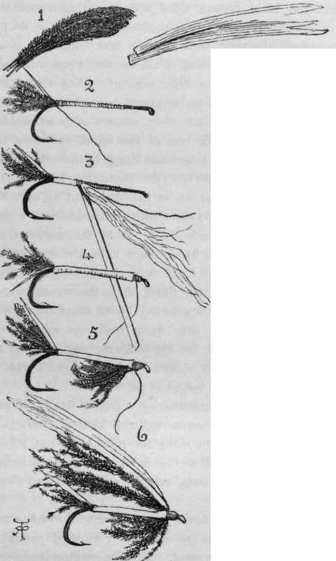

Whippings, Servings, Knots, Hooks, And Sundry Wrinkles. Part 4
Description
This section is from the book "Sea Fishing", by John Bickerdyke. Also available from Amazon: Sea Fishing.
Whippings, Servings, Knots, Hooks, And Sundry Wrinkles. Part 4
RUNNING LINE ATTACHED TO FLY CASTS OR WHIFFING SNOODS BY FIGURE OF EIGHT KNOT.
Twisting gut or hemp yarn is a simple matter. The little secret—for there is one—is to take two ends (the other ends being fixed on a nail or otherwise), twist each separately in one direction, then lay the ends together and twist both together in the opposite direction. This process is very simple. Little twisting machines are sold for anglers' use, but everything that is necessary can be done with the fingers. To make a double twisted gut snood, take two gut casts of the requisite length, and after soaking twist together in the manner directed. The second twist, when the two are laid together, will work of itself if a weight of a pound or more is attached to one end of the casts and allowed to revolve. This gives a more regular twist than if the second twist is done with the fingers. Gut is easily plaited. In that case begin with three strands, and when about an inch and a half from the end, plait in the ends of three other strands, repeating this operation until the snood is sufficiently long.
Reel lines frequently require joining together, and there is no possible knot with which this can be done, as any projection of that kind on the line may catch in the rings during the run of a big fish and bring about a smash. Splicing, as sailors use the word, while not quite out of question, would be a very long, tedious process with a fine line such as is used on reels. But with a little care the two ends can be satisfactorily joined together in the following manner. If it be a plaited line, slant off each end which is to be bound, with the aid of a sharp knife or a pair of scissors ; then thoroughly wax the two ends ; press or roll them together with finger and thumb, and proceed to bind them over most carefully and securely with well-waxed silk, finishing off in the manner already described (p. 69). The two ends are overlaid for about an inch and a half. Next warm your beeswax at the fire until it is very soft, and rub it on to the binding. Then place the line between the palms of the hands and rub the palms together briskly as one does sometimes on a cold day, rolling the line backwards and forwards. This works the wax right into the binding and gives it a nice smooth finish. Fine twisted lines can also be spliced in this way, the ends being unravelled, waxed, rolled together and bound over.
With regard to waterproofing lines, the best dressing consists of boiled oil—in fact, the same as sou'-wester and oilskin coat and trousers would be dressed with ; but the process is long and troublesome, and hardly one fitted for the amateur to undertake. The line should be soaked in the boiled oil all night; then stretched, and the superfluous oil rubbed off with a piece of leather or rag. It should be left until quite dry in a place of shelter where the rain cannot get at it ; and then a second dressing should be given. Some of the best lines nowadays have the oil dressing driven into them by placing them in an air pump. I much prefer tanning lines intended for sea fishing, and even the tanning is unnecessary because the lines are so cheap. A recipe for tanning silk and hemp lines is given in Chapter VII.
There is a little dodge for winding a new line on a reel, for which I am indebted to Mr. Cholmondeley Pennell. It is not the least of the many useful practical hints he has communicated to fishermen. Take the coil of line and place a roll of newspaper through it large enough to almost fill up the centre of the coil. Next place two chairs about 2 ft. 6 ins. apart; insert a walking-stick through the centre of the roll of newspapers, and lay the two ends of the walking-stick on the chairs. The line will then be on a sort of winder, and all we have to do is to get the end free, fasten it to the reel, and wind away.
Rod-making is, of course, beyond the scope of this book ; but I would earnestly impress upon sea anglers the desirability of keeping their rods thoroughly well varnished or oiled, and of renewing whippings whenever necessary. Any good coach-maker's varnish is excellent for rods. The longer it takes in the drying, the more elastic and durable it is likely to be. The ferrules should be lightly smeared with vaseline from time to time, and the little sheaths of the short boat rods, which will be mentioned later on, should be kept well oiled. Never place a rod in a damp corner or hang it up against a damp wall. Beware, too, of damp cases for your rods. I severely injured a split cane rod once by carelessness in this respect. On getting to the river I took the rod out of its case, put the case in my creel and fished away all day. There were a few showers which, I suppose, penetrated through the wickerwork and wetted the rod case ; at any rate, it was moist. Without observing that the material was damp, I took the rod to pieces, placed it in the case and left it there some days. The result was that one of the tops which required varnishing came unglued. This happened five hundred miles from a tackle-maker. I do not suppose split cane rods will be much used in sea fishing. Certainly there is no necessity for them ; but any rod may be injured in this way. Stops are sometimes the ruin of rods. Wet enters a female ferrule during a day's fishing ; at night the careful angler, when he takes his rod to pieces, inserts a stop in the ferrule, carefully corking up the moisture, and the wood inside swells and in time rots.
Sea flies are so easily tied, and there is such a large field for experimental work in testing different patterns on sea fish, that I will venture a few directions as illustrated. If you are not using eyed hooks, it is necessary to whip on a little loop of gut about an eighth of an inch long to the end of the shank, or, better still, a loop of twisted gut. When doing this carry the binding silk on to the beginning of the bend of the hook, there bind, with about three turns of the silk, half a dozen strands of peacock harl (1) to form a tail (2), and place under the end of the binding the end of a piece of flat silver tinsel about two inches long. Next lay a piece of white worsted or floss silk down the shank to make the body plump, wind the flat tinsel round the body of the fly (3) up nearly to the loop, and take a couple of turns round the tinsel with the silk, and hold it in position (4). There only remains to tie on the wings and legs, and here you will have a little difficulty. Not that there are any special directions to be given, but the manipulation is not very easy. Take some short strands of peacock harl, hold them underneath the end of the shank and twist the silk round them (5) ; then take some longer strands of peacock harl (1), judging their length from the illustration, keeping it, of course, in proportion to the size of the hook, and lay over it a couple of strips of white swan's feather, introducing, if you like, a strip of red on each side. Hold this between the finger and thumb of one hand, place it on the end of the shank, and with the other hand twist the binding silk round firmly several times (6); then finish off in the manner shown for whipping gut to hook (p. 67). Touch this binding with the shellac varnish, and your fly is ready as soon as the varnish is dry, which will be the following day. If you are in a hurry to use it, melt a little bees' or cobbler's wax on the binding and it can be wetted at once.
How To Tie A Sea Fly.
The first fly may be somewhat of a duffer, but it will probably catch fish as well as any more highly finished production. Beginners are very apt to make the mistake of not leaving room enough on the end of the shank to tie on the wings. They make the body too long, not only at this end, but also at the other.
Every man ought to know how to dress for rough, windy cold work such as sea fishing often is. ' All wool' should be the motto of the sea fisherman. There is nothing better than a loose-fitting sweater or jersey made not of the wool of the shops, but of the homespun material produced in the crofters' cottages of the west of Scotland. It contains the natural oil and has wonderful wet-resisting properties.
Thanks to years of experience, sailors and fishermen have found out what is best to wear on the sea, and in copying their oilskin, sou'-westers, and double-breasted pilot jackets you will be doing a wise thing. Indiarubber boots, felt lined, are very comfortable on a wet, cold, autumn day in an open boat ; though not very nice things to swim in should you be upset. They want propping open with short pieces of stick on going ashore, and carefully drying inside. Perhaps a better arrangement is two pairs of stockings and an unlined indiarubber knee-boot; the felt is certainly the warmer and more comfortable, but the stockings, which get moist from perspiration, can more easily be dried than the felt, and can moreover be washed. In winter, sea fishermen often wear over their socks and trousers a pair of large oily stockings, and over these again their long sea boots. Thick gloves without fingers are almost a necessity during the bitter winter weather which is experienced in the North Sea.
On some parts of the coast the oilskin coats are fitted with strings instead of buttons, the men finding that in winter a reef-knot is much more easily undone than are button and buttonhole. For saltwater work I much prefer oilskins to any form of mackintosh.
Never judge of the temperature at sea by the mildness of the air on shore. It is nearly always more or less chilly when we get a mile or two from the land if any breeze is blowing. One learns by experience, and I am quite ready to run the risk of being called an 'old woman' for advising all would-be sea fishers, if they will not heed my warning as to dressing warmly, at least to take plenty of wraps with them when they go down to the sea in boats.
Continue to:
- prev: Whippings, Servings, Knots, Hooks, And Sundry Wrinkles. Part 3
- Table of Contents
- next: Chapter IV. Baits
Tags
fishing, hooks, bait, fishermen, spanish mackerel, mackerel fishing